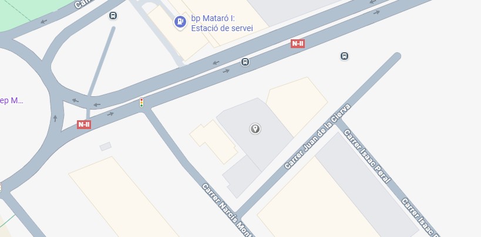

Calum Wood
Especialista en Sistemas. Se encarga de que toda la infraestructura IT de nuestros clientes funcione a la perfección.
Soluciones tecnológicas desde el TecnoCampus de Mataró
En Tech Innovation S.L. ayudamos a las empresas a dar el salto tecnológico que necesitan. No solo instalamos ordenadores; creamos estrategias para que tu empresa sea más rápida, segura y eficiente en el entorno digital actual.

¿Por qué elegirnos?
Somos jóvenes, estamos actualizados con las últimas tendencias tecnológicas, ofrecemos un trato humano que las grandes empresas de informática han olvidado.
Tech Innovation, una consultoría informática, emergió en el TecnoCampus de Mataró, fundada por tres jóvenes emprendedores, con ganas de impulsar la transformación digital en la zona.
Con una fuerte especialización en ciberseguridad, infraestructura IT y estrategia digital, presenta soluciones tecnológicas personalizadas, para mejorar la eficiencia, protegiendo datos y apoyando el crecimiento empresarial.

En poco tiempo, hemos creado proyectos para diferentes sectores, sobresaliendo por el trato cercano, soluciones escalables y enfocándonos en valor real para el cliente.
Desde nuestra sede, hemos crecido de un pequeño despacho a gestionar la infraestructura de muchas empresas locales. Nuestro lema siempre ha sido el mismo: "Tech Innovation: Donde la tecnología y la confianza se encuentran.".
Conoce a las personas que hacen posible que tu tecnología nunca falle.
Especialista en Sistemas. Se encarga de que toda la infraestructura IT de nuestros clientes funcione a la perfección.

Experta en Ciberseguridad. Su misión es blindar los datos de tu empresa y formar a los empleados en seguridad digital.

Estratega Digital. Ayuda a las empresas a posicionarse y a conseguir más ventas mediante publicidad y marketing online.
Ofrecemos un catálogo completo de soluciones para que no tengas que buscar diferentes proveedores.


Nuestro mayor orgullo es el éxito de nuestros clientes.
El caso más destacado es nuestra colaboración con la Inmobiliaria Casa Firme.
Para ellos, realizamos una transformación increible: migración completa de sus bases de datos a la nube, renovación de todos sus equipos de oficina, asesoría en presupuestos tecnológicos y una campaña de publicidad digital que aumentó sus ventas significativamente.


¿En cuánto tiempo resolvéis una avería urgente?
Nuestra prioridad son los clientes locales. Solemos dar respuesta en menos de 2 horas para incidencias críticas.
¿Es seguro subir mis datos a la nube?
Totalmente. Utilizamos encriptación de grado bancario y cumplimos estrictamente con la RGPD para que tu información esté blindada.
¿Dáis soporte técnico a domicilio?
Sí, nos desplazamos por toda la zona de Mataró y alrededores, aunque también resolvemos el 80% de problemas de forma remota.
Estamos deseando escuchar tu idea o ayudarte con tus problemas informáticos. Para una atención rápida, haz clic en el botón inferior:
Ir al Formulario de ContactoTeléfono: 633-34-80-45
Email: tecnnova@tecno.in.com
Instagram: @tecnnova_tec
Sede Central: Avinguda d'Ernest Lluch, 32. Mataró (08302).
